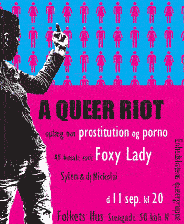

| dunst recommends this event | 11. September 2004 |
 |
|
| Enhedslistens Queergruppe arrangerer: A Queer Riot, med debat, koncert, djs med pop, rock og cool gammel indie, og ikke mindst nogle ultra coole (og piv frække - I wish I was a lesbian!) drag kings fra Berlin, der kalder sig: Pussycoxx. bla. andre sidder Knud Vesterskov fra dunst i diskusionpanelet. www.pussycoxx.de |
|